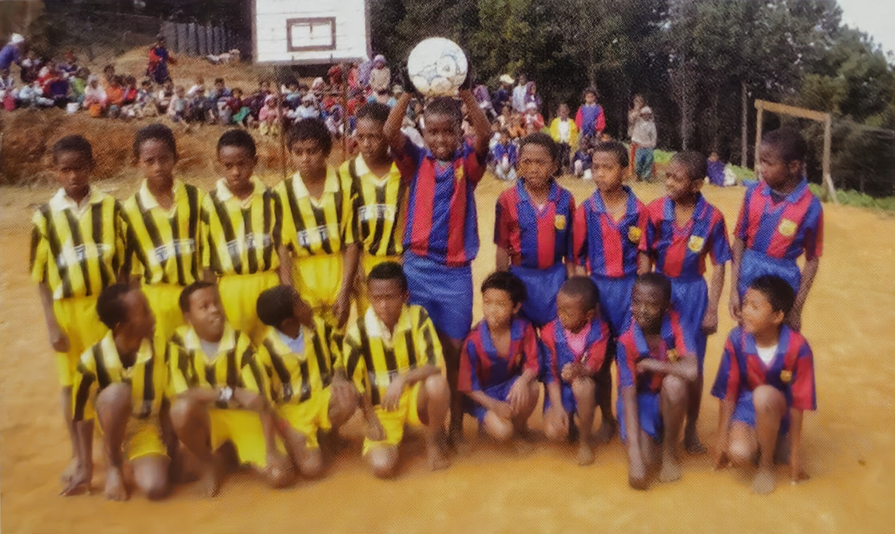

À Mantasoa, sur les hauts plateaux malgaches, à 1 400 mètres d'altitude, l'école Emmanuel est née d'une conviction simple et tenace : chaque enfant mérite d'apprendre, quelles que soient les difficultés de la région. Voici son histoire, telle que l'ont racontée Odile Meseguer, sa fondatrice, et les institutrices.
1998 — La naissance d'un rêve
Avant de fonder l'école, Odile Raherinirina se destinait à la vie religieuse. Institutrice dans un couvent d'Antananarivo, elle renonce, trois mois avant ses vœux, à devenir religieuse : la vie monastique ne correspond pas à ses attentes. Elle rentre dans son village, le cœur habité par un désir profond — créer une école pour accueillir les enfants défavorisés.
Tout commence simplement. Une cousine lui demande de donner quelques cours à ses enfants. Dès le lendemain, des dizaines d'autres enfants se présentent — dont beaucoup ne sont même pas scolarisés. À Madagascar, un enfant né hors d'une structure médicale n'est pas reconnu par l'État ; sans acte de naissance, il n'a pas le droit d'aller à l'école. Odile prend alors le risque d'accueillir les plus démunis et entreprend, à ses frais, les démarches au tribunal de la capitale pour régulariser leur situation. Certains de ces premiers enfants sont aujourd'hui à l'université.

Le 5 octobre 1998, l'école ouvre ses portes sous le nom de « Maranatha ». Deux classes, 85 élèves, et une institutrice seule pour tous. Les cours se tiennent d'abord dans une pièce, puis dans la maison inachevée d'un cousin : un tableau fait d'un panneau de contre-plaqué, des bancs de planches posées sur des briques, et une simple ardoise pour tout matériel. Pour plus de la moitié des élèves — les plus pauvres et les orphelins — l'école est entièrement gratuite. Odile met aussi en place une aide alimentaire pour les enfants qui ont faim.

Malgré ces conditions, les villageois sont frappés par les progrès des enfants. La discipline et la soif d'apprendre sont telles qu'une classe peut rester studieuse et silencieuse même en l'absence de la maîtresse.
Julien Meseguer, l'élan décisif
Pour équiper l'école, Odile et les parents d'élèves sollicitent un missionnaire français, Jean Deléfortrie, représentant de l'association humanitaire « Maranatha ». C'est ainsi qu'un homme entre dans l'histoire de l'école : Julien Meseguer.
Né à Luc-sur-Orbieu, dans l'Aude, d'une famille modeste, Julien quitte l'école à 14 ans pour travailler dans les vignes. La Seconde Guerre mondiale éclate. Trois jours après la fin du conflit, une mine explose sur son passage : il perd une jambe. Cet ancien sportif se relève pourtant, devient un autodidacte passionné, représentant de commerce, puis colporteur biblique. Après le décès de son épouse, il consacre sa vie aux plus démunis.

En découvrant la misère de Mantasoa et une école qui « manque de tout », Julien décide de s'y installer et d'y mettre toute son énergie et toutes ses économies — une œuvre qu'il poursuivra grâce à sa retraite et à sa pension de guerre.
Lorsque l'association Maranatha se dissout, Julien, qui en était le bailleur de fonds, reprend le projet de l'école. En 2001, il épouse Odile, la directrice. Ensemble, ils décident de consacrer leur vie à cette œuvre, sur le plan éducatif comme social.
Julien rebaptise alors l'école « Emmanuel » — un mot qui signifie « Dieu avec nous ».

Bâtir l'école de leurs mains
Construire une vraie école relève du défi. Le premier terrain acheté se révèle appartenir à l'État : il faut le racheter. Puis tout le village se mobilise. Les habitants fabriquent à la main des milliers de briques d'argile, cuites au feu de bois durant la nuit, pendant que les femmes préparent les repas des ouvriers.

Les fondations sont posées début 2001. Encore en France, Julien finance la construction et envoie l'argent par la poste. Monsieur Lala, président des parents d'élèves, prête sa voiture et soude les portes en fer. En quelques mois, les murs et la toiture s'élèvent.

Le 18 septembre 2001, c'est la première rentrée dans le nouveau bâtiment. Les enfants sont ravis. L'école se pare bientôt de couleurs, et une rotonde est construite pour permettre aux élèves de manger à l'abri du soleil.
Reconnaissance et premiers succès
L'école avait obtenu son autorisation d'ouverture dès septembre 1999. En novembre 2002, elle porte officiellement son nom : « École Privée Emmanuel ». Pour les institutrices venues de loin, Julien fait construire de petits studios afin qu'elles puissent rester sur place.
En 2003, l'école présente pour la première fois ses élèves aux examens officiels. Le résultat dépasse toutes les espérances : la meilleure élève de tout le centre d'examen — plusieurs centaines de candidats — vient de l'école Emmanuel. Ce ne sera pas un hasard isolé : année après année, les élèves d'Emmanuel raflent les premières places du district, avec souvent 100 % de réussite. Chaque enfant qui passe les examens reçoit d'Odile une petite récompense.

Une école qui rayonne
Odile fait confectionner un uniforme aux couleurs des deux drapeaux : vert et blanc du drapeau malgache, bleu du drapeau français, et un béret rouge pour tous — en hommage à Odile, malgache, et à Julien, français. Chaque lundi, les enfants le revêtent pour hisser les drapeaux et chanter les hymnes.

L'école a même son hymne : Odile écrit un poème, « Le plus beau nom, c'est Emmanuel », qu'un compositeur d'Antananarivo met en musique et que les enfants enregistrent sur CD.

Le sport tient une grande place : l'école aligne plusieurs équipes de football, filles et garçons, qui remportent souvent les tournois de la région. Julien aménage même un terrain de basket.
L'informatique fait son entrée grâce à Julien et Danielle Lagarde, fidèles amis qui apportent ordinateurs et imprimantes et forment Odile à la gestion de l'école. Pendant les vacances, des cours de couture gratuits offrent un métier à de nombreuses femmes du village. En 2005, la fille de Julien, Geneviève, présente l'école à la télévision suisse : les dons recueillis permettent d'acquérir un véhicule plus fiable. Chaque journée de classe commence et s'achève par une prière, dans un esprit d'harmonie et de service.
Épreuves et solidarité
En 2009, une grave crise politique secoue Madagascar. Les aides de l'État aux écoles privées cessent ; le quotidien devient plus difficile. Face à l'adversité, la solidarité s'organise. Le personnel met en place l'« Akandray » : chaque mois, chacun verse une part dans un fonds commun, reversé à tour de rôle, et l'on se cotise pour toute famille frappée par la maladie ou un deuil.
L'école connaît aussi le chagrin : un soir de réveillon, deux élèves se noient en traversant le lac en pirogue. Mais la vie continue, et Odile et Julien cherchent à rendre l'école plus autonome : ils créent une plantation d'ananas, un potager, un verger, une rizière. Ils achètent une vache laitière, Soambola, dont le lait sert à confectionner des glaces pour les enfants — et un bol de riz est offert chaque jour aux plus démunis.

« La misère devenant criante, et de nombreux enfants ne mangeant pas à leur faim, ils peuvent dès lors offrir un bol de riz aux plus démunis. »
Les parrains et l'association Emmanuel
En 2011, un pédiatre de Béziers engagé dans l'humanitaire, le Docteur Emmanuel Froye, découvre l'école et propose à Odile un système de parrainage : pour une trentaine d'euros par an, un parrain couvre la scolarité complète d'un enfant. De retour en France, il affiche des photos de l'école dans la salle d'attente de son cabinet. Le premier enfant est parrainé en janvier 2012.

Le mouvement grandit vite. En 2013, fort d'environ 130 parrains, le Docteur Froye fonde l'association « Emmanuel » pour donner un cadre juridique aux parrainages et aux actions de soutien à l'école. Fin 2014, ce sont déjà 179 enfants parrainés, soutenus par des marraines et parrains venus de toute la France, mais aussi de Suisse, de La Réunion et de Madagascar, et par de généreux donateurs.
La mission doit perdurer
En 2013-2014, l'école compte 330 élèves, de la maternelle au CM2. La plupart habitent à plus de cinq kilomètres : ils viennent à pied, à vélo, ou traversent le lac en pirogue. Malgré tout, ils arrivent chaque matin avec la même soif d'apprendre.
C'est Odile et les institutrices qui ont écrit cette histoire, d'abord pour répondre à une obligation administrative, puis pour la partager — c'est le livret dont ce récit est tiré. Leur reconnaissance va à tous ceux qui ont rendu cette aventure possible : les parrains et marraines, les amis et donateurs fidèles, et tous ceux qui, dès les premiers jours, ont cru en cette école.

« Je prendrai plaisir à leur faire du bien […] de tout mon cœur et de toute mon âme. » — Jérémie 32.41
Cette histoire continue de s'écrire
Et vous pouvez y prendre part. Votre soutien permet à l'école Emmanuel de poursuivre sa mission.
Nous aider →